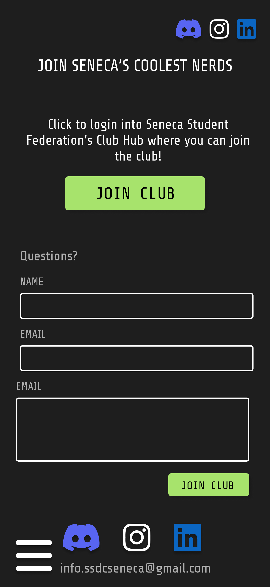
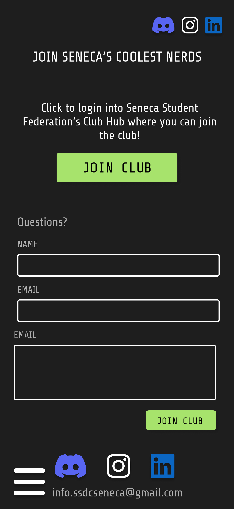

Design Hacks 2024
(Hackathon Winner)
(FIGMA / ADOBE ILLUSTRATOR / HTML / CSS / JAVASCRIPT)
My team's design for Seneca Software Developers Club's (SSDC) homepage.
My team's project won Best Overall Hack and Most Creative Hack for Design Hacks 2024. We designed and developed a website for the Seneca Software Developers Club (SSDC).
Challenge Details
- Design and develop a website that reflects SSDC's vision and goals
- Align with the club’s colour palette, logo, and theme
- Must be responsive, scalable, and ready for implementation
- Foster a sense of community and collaboration among Seneca's software developers
- Complete within 1 week
We ensured our design aligned with SSDC's existing logo.
The Team
- UX/UI Designer / Developer: Cesca Dela Cruz (me!)
- Developer: Irish Banga
Our Project
I designed multiple iterations of the form, testing each one against the original design. Consistently, the majority of participants preferred my iterations over the original in terms of speed, understandability, and overall design. However, a common critique I kept receiving was that my design didn’t look as good as the original. Its usability was better, but it didn’t look as “sleek,” “modern” or “trustworthy.” For one iteration, a participant said it looked “really amateur.” While remaining faithful to the brand’s aesthetic, I experimented with the UI until I no longer got those comments.
Low-fidelity prototype
Prioritizing Responsiveness
I designed multiple iterations of the form, testing each one against the original design. Consistently, the majority of participants preferred my iterations over the original in terms of speed, understandability, and overall design.

 

Our Winning Submission
I designed multiple iterations of the form, testing each one against the original design. Consistently, the majority of participants preferred my iterations over the original in terms of speed, understandability, and overall design.
High-fidelity mockup 3
Low-fidelity prototype

High-fidelity mockup 1
High-fidelity mockup 2